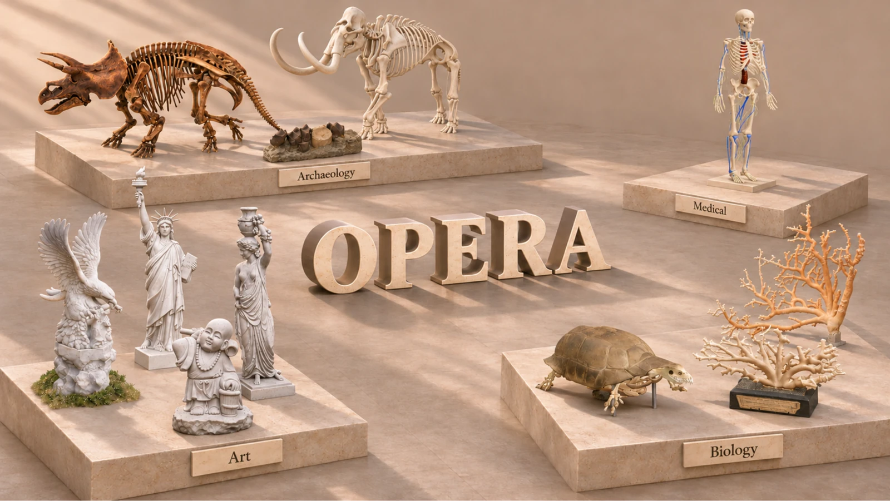
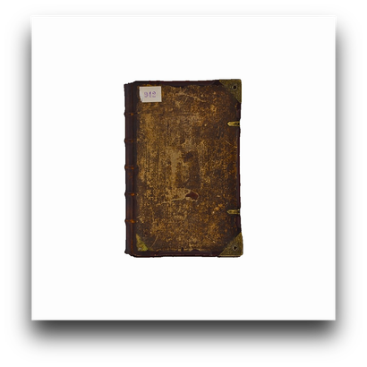
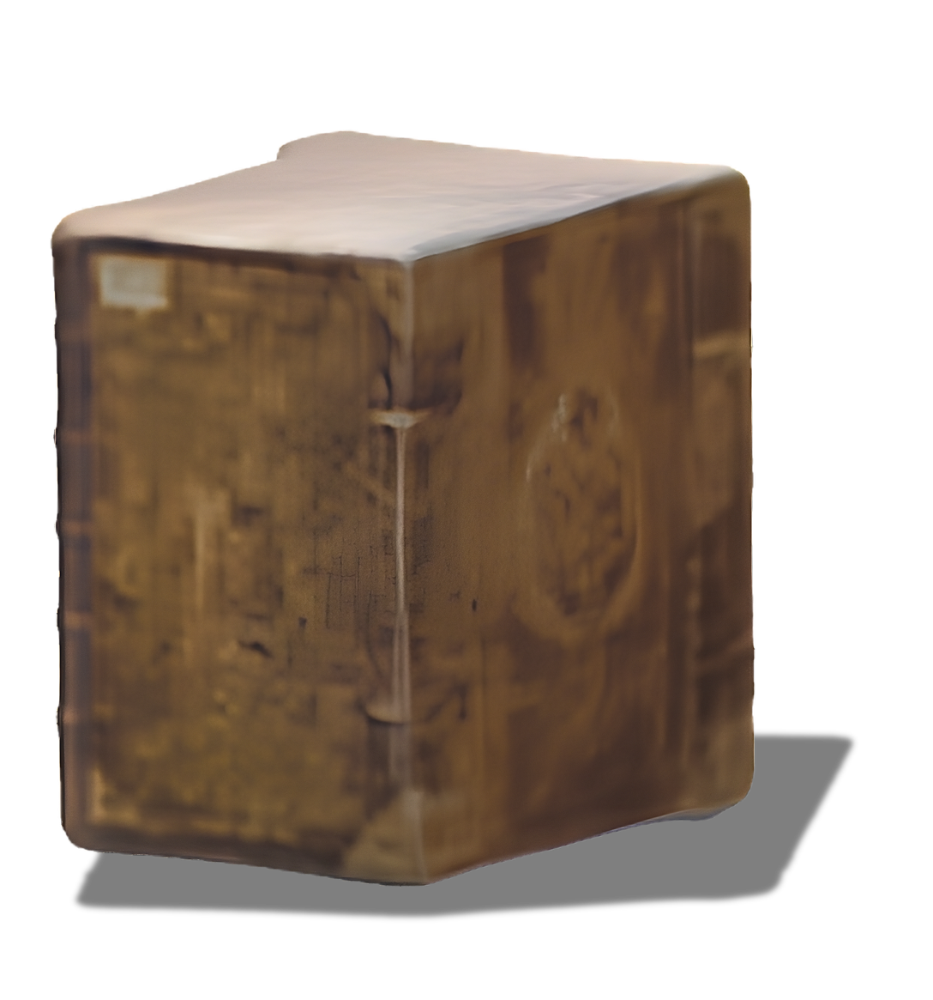
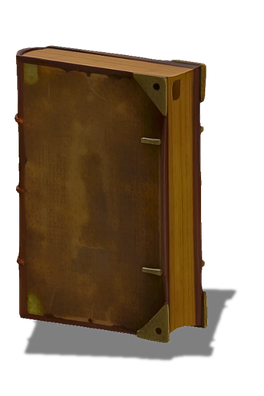

Frozen backbone, frozen perception
The generator and the perception models keep their weights. Their operations stay differentiable, so gradients can reach the sampling state.
PERCEPTION → GENERATION
We propose OPERA, a unified perceptual alignment framework that turns pretrained perceptual knowledge into explicit guidance for instance-faithful 3D generation. Lightweight alignment modules map intermediate generative representations to perceptual representations, allowing discrepancies with input-derived targets to guide the sampling trajectory. This principle supports gradient-based denoising guidance for multiview diffusion and velocity guidance for native 3D flow matching, while keeping both generative backbones and perception models frozen.

01 / MOTIVATION
A single photograph leaves most of an object unseen. Generative models fill the gap with convincing detail, but convincing detail can belong to some object of the category rather than to the one in the image. Instance fidelity asks for the particular object: its proportions, surface patterns and distinctive parts. The figure shows one example per paradigm, a multiview diffusion model and a native 3D flow-matching model.
02 / OUR APPROACH
One alignment principle, instantiated for two generative paradigms.
The generator and the perception models keep their weights. Their operations stay differentiable, so gradients can reach the sampling state.
A small alignment module per perceptual target is the only thing trained, on about a thousand Objaverse objects, independently of the other modules.
The target is computed once from the input image. At guided steps the state is corrected along the alignment gradient, and the sampler continues from the corrected state.
03 / EXPLORE 3D
Selected examples, chosen to show what guidance changes. They are not a representative sample; the evidence section reports the full cohorts.
The original outputs for this object are not hosted on this page yet.
Open in the cross-domain gallery ↗More comparisons
The ground truth is always shown next to the results: the original author’s model where one is public, otherwise a still of the reference scan. Each viewer is an independent Sketchfab embed: cameras are not synchronised, and models keep the frame they were generated in. For matched-camera views and the surface-normal row, use the research gallery linked above. ReconViaGen and Hi3DGen are external methods run at their release settings; Hi3DGen outputs geometry only.
Choose an object to explore its reconstruction.
Rotate, zoom and inspect the reconstructed surface.
Loads a third-party viewer from Sketchfab.Select any thumbnail to load its 3D reconstruction here. Drag to rotate; scroll or pinch to zoom.
Open on Sketchfab ↗04 / COMPONENTS
Geometry and appearance are guided by different signals, alone or together.
Structure guidance changes geometry: it acts on the sparse layout from which the shape is then generated. Material guidance changes appearance only, on fixed geometry. Combined uses the structure-guided geometry and then guides its material.
Material guidance needs a camera fitted to the generated shape. When the fitted silhouette overlaps the input by less than 0.8 IoU, guidance is switched off for that object and the output is the unguided fallback. Such objects stay in the reported cohorts and are labelled in the gallery; they are not counted as guided results.
Depth guidance carries geometric structure; semantic guidance carries what the object is and how its surface looks. Each is trained separately and they are mixed at sampling time. On the two benchmarks they help differently: depth alone gives most of the geometric gain on GSO, while the semantic signal matters more on OmniObject3D.



Guidance reduces the bulk of the book reconstruction, bringing its proportions closer to the reference.
Era3D with and without OPERA is the same-backbone comparison. SAM 3D Objects is an external image-to-3D reference. Individual renders are fitted to the display tiles; use the full figure to inspect the original presentation.
05 / EVIDENCE
Means over fixed cohorts, copied from the paper. The comparison that matters is each backbone with and without OPERA. Arrows give the better direction. Not every object improves, and not every difference is statistically established; the notes under each table say which are.
| GSO | CD ↓ | F1@0.1 ↑ | PSNR ↑ | LPIPS ↓ |
|---|---|---|---|---|
| Era3D | 16.46 | 0.801 | 21.54 | 0.0705 |
| + Depth | 11.64 | 0.833 | 22.21 | 0.0624 |
| + Semantic | 15.51 | 0.803 | 21.70 | 0.0690 |
| + Combined | 11.45 | 0.842 | 22.42 | 0.0613 |
| OmniObject3D | CD ↓ | F1@0.1 ↑ | PSNR ↑ | LPIPS ↓ |
|---|---|---|---|---|
| Era3D | 35.78 | 0.683 | 20.44 | 0.0842 |
| + Depth | 33.49 | 0.698 | 20.71 | 0.0804 |
| + Semantic | 28.89 | 0.693 | 21.02 | 0.0773 |
| + Combined | 26.89 | 0.705 | 21.25 | 0.0746 |
Mean Chamfer distance falls by 30.4% on GSO and 24.8% on OmniObject3D with combined guidance. Paired tests do not establish the GSO Chamfer improvement (p = 0.280); on OmniObject3D the adjusted evidence is for PSNR and LPIPS. Settings were selected on these sets, so the analysis is exploratory. The semantic target is Caption-T5 on GSO and DINOv3 on OmniObject3D. Table 1 of the paper.
| Toys4K geometry | CD-L2 ↓ | F1@0.01 ↑ | F1@0.02 ↑ |
|---|---|---|---|
| TRELLIS.2 | 0.010546 | 0.4161 | 0.6503 |
| + Structure | 0.009387 | 0.4273 | 0.6612 |
| Toys4K appearance | PSNR ↑ | SSIM ↑ | LPIPS ↓ |
|---|---|---|---|
| TRELLIS.2 | 23.8986 | 0.9436 | 0.0728 |
| + Structure | 24.0595 | 0.9441 | 0.0702 |
| + Material | 24.1887 | 0.9438 | 0.0723 |
| + Structure + Material | 24.3769 | 0.9444 | 0.0697 |
Structure guidance lowers CD-L2 by 11.0% (p = 0.1075, not established) and raises both F1 scores (p = 0.0001 and 0.0003). All appearance differences against the baseline have p ≤ 0.0132. The material result includes 99 camera-gated objects and 3 memory fallbacks that ran unguided. Tables 6 and 7 of the paper.
| Dataset | CD-L2 ↓ TRELLIS.2 | CD-L2 ↓ OPERA | PSNR ↑ TRELLIS.2 | PSNR ↑ OPERA |
|---|---|---|---|---|
| MedShapeNet | 0.0448 | 0.0389 | 26.47 | 27.24 |
| Medical Sketchfab | 0.0304 | 0.0248 | 19.23 | 19.46 |
| Smithsonian | 0.0198 | 0.0150 | 24.72 | 25.61 |
| AntScan | 0.0196 | 0.0159 | 26.19 | 26.31 |
CD-L2 falls by 13.2%, 18.6%, 24.4% and 19.0%. The paper prints no significance tests for this table, and SSIM drops slightly on AntScan. Untextured sources are rendered grey, which limits what appearance metrics can show. Table 10 of the paper.
| Method | CD-L2 ↓ | F1@0.01 ↑ | PSNR ↑ | LPIPS ↓ |
|---|---|---|---|---|
| TRELLIS | 0.014117 | 0.3355 | 21.376 | 0.0850 |
| Hi3DGen (geometry only) | 0.014728 | 0.2986 | – | – |
| ReconViaGen v0.5 | 0.014378 | 0.2861 | 22.587 | 0.0924 |
| TRELLIS.2 | 0.010546 | 0.4161 | 23.899 | 0.0728 |
| OPERA (Structure + Material) | 0.009387 | 0.4273 | 24.3769 | 0.0697 |
Hi3DGen builds on the earlier TRELLIS backbone and outputs geometry only. OPERA’s gain is measured against its own backbone, TRELLIS.2; the other rows place it among complete systems. Table 8 of the paper.
MORE QUALITATIVE RESULTS · DIFFUSION
Selected colour and normal outputs with combined guidance, across two backbones and three datasets.
06 / RESOURCES
The paper and code are not public yet. Links and a citation entry will be added here once the final bibliographic details are available.
Benchmarks: Google Scanned Objects, OmniObject3D, Toys4K, MedShapeNet, AntScan, Smithsonian Open Access 3D and Sketchfab models under their own licences; each gallery object names its source. Backbones: Era3D and TRELLIS.2. Perception models: DINOv3 and VGGT for flow matching; a caption (T5) or DINO semantic target and a monocular depth model for diffusion. External methods: ReconViaGen and Hi3DGen, run from their official releases.